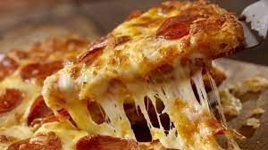

Nuestra pizzería fue fundada en el año 2009 por los hermanos Juan
Martín López y Jorge Martín López. Durante su infancia y mayor parte de su
adolescencia vivieron en Italia con su tío, que era propietario de una
pizzería, él les enseñó todo lo necesario para hacer las mejores pizzas su
ciudad. Cuando volevieron a España decidieron abrir su propia pizzería en
calle Molinos nº8 y desde entonces Il Capo se ha vuelto la pizzería más
demandada de todo el barrio. 